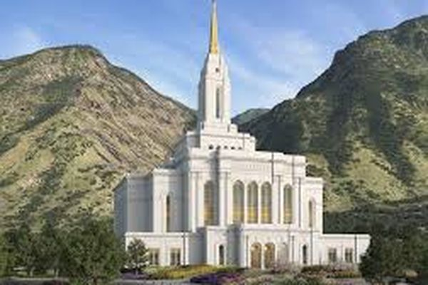
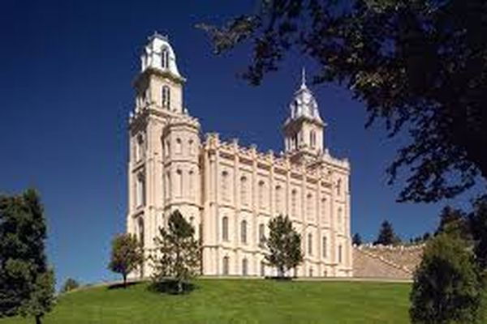
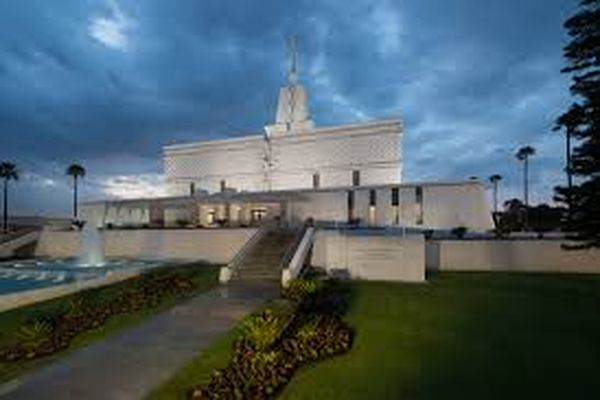

Temple Album
☰
Home
Old
New
Large
Small
Featured Temples
Salt Lake Temple

Provo Utah Temple

Manti Utah Temple
Nauvoo Illinois Temple
Logan Utah Temple

Mexico City Temple
Monterrey Mexico Temple
Guadalajara Mexico Temple
Rexburg Idaho Temple